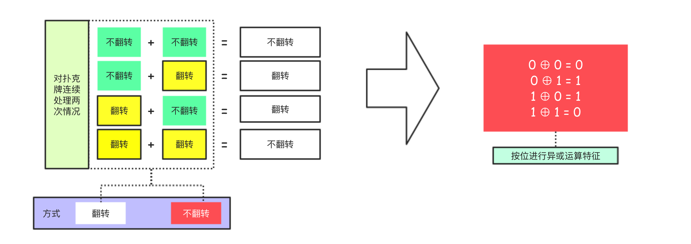
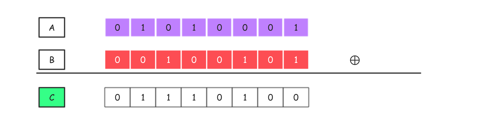

数据安全系列 - XOR
本文简单介绍计算机体系中的异或运算，运算其特点以及在数据安全领域的应用。
异或运算介绍
XOR 全称为exclusive OR,简写为 XOR，中文称为异或运算。
异或运算是一种数学运算符，主要应用于逻辑运算和计算机体系中的位运算。异或运算的数学符号常表示为“⊕”，运算法则为：A ⊕ B = (¬A ∧B) ∨ (A ∧¬B)。
简单研究下 1 个位（比特）的异或运算。
异或运算可以类比于奇偶数的加法运算或者是翻牌处理。在按位运算的过程中，参与运算的数值只有两种可能，那么为 0 要么为 1，在这里 0 为偶数，1 位奇数，可以得出下面的运算特征，我们发现结果和异或运算是一致的。
接下来我们来看下所谓的翻牌处理。我们可以想象一下，假如桌面中有一张扑克牌，对应二进制总位的异或运算有 0 和 1 两种情况，那么对于扑克牌也有两种情况，那么就是不翻转和翻转，我们找到它们的对应关系。

接下来我们来分析下对扑克牌进行翻转|不翻转处理以及对应特征，我们发现结果和异或运算是一致的。
**异或运算的特征可以简单的归纳为：相同为0，不同为1**。
常用位运算符补充
位操作符用于最基本的层次，它们按照内存中表示数值的位来操作数值，位运算符主要有：按位与（&）、按位或（|）、按位异或（^）、按位取反（~）、左移（<<）**和**右移（>>），这里将简单介绍常用的位运算符以及其基本特征作为补充。
按位或运算（OR）的运算符为|, 是双目运算符，其运算特征是：两个运算数中有1则为1，否则为0。
按位与运算（AND）的运算符为&，是双目运算符，其运算特征是：只有当两个操作数均为1的时候结果为1，否则为0（也可以理解为：两个运算数中有0则为0，否则为1）。
OR 运算 1 | 1 = 1，1 | 0 = 1， 0 | 1 = 1，0 | 0 = 0
AND 运算 1 & 1 = 1，1 & 0 = 0， 0 & 1 = 0，0 & 0 = 0
按位取反运算（NOT）也称为按位非运算，运算符为~，单目运算符。对操作数执行按位取反会返回操作数的反码，其运算本质为：操作数的负值-1。为了理解这一点，必须搞清楚下面的这些基本概念。
在处理数据的时候，通常把数据分为有符号和无符号的，如果我们使用 32 位二进制码（不同语言有差异表示数据，那么对于有符号的整数，则 32 位中的前 31 位用于表示整数的值。第 32 位用于表示数值的符号：其中 0 表示正数，1 表示负数。第 32 位被称为符号位。如果要表示 19 这个数字，那么其二进制码形式如下：00000000 00000000 00000000 00010011 需要注意的是，虽然负数在使用二进制码表示的时候使用的格式是二进制补码。下面给出负数的二进制补码表示方式的处理过程：
[1] 求负数绝对值的二进制码。
[2] 求该二进制码的反码形式。
[3] 对得到的二进制反码加一。
这里，我们以-19 为例子来演示负数的表示方式。
19 的二进制码 00000000 00000000 00000000 00010011
二进制码反码 11111111 11111111 11111111 11101100
上面反码加 ① 11111111 11111111 11111111 11101101
我们回到按位非（NOT）的操作中来，它的结算特点是每个参与计算的二进制位都取反，相当于是求二进制的反码。我们已经知道负数的二进制表示方式，应该也就能够理解对操作数进行按位非操作结果其实就是操作数的负值-1。因为操作数的负值表示需要（反码 + 1），而我们需要的结果是反码，所以只需要倒退一步即可。
XOR 和密码体系
现在我们已经清楚了异或运算的特点，而且掌握了 1 个二进制位的异或运算方式，那么下面我们来看一个稍微复杂点的例子，尝试着对一系列的二进制位进行异或处理。
上面的示例中我们使用两个 8 位的二进制系列 A 和 B 进行异或运算，其中 A 的内容为 0101 0001，B 的内容为 0010 0101。在对多个比特序列进行异或运算的时候，需要分别对每一位的数据进行异或运算以得到结果。这里 A ⊕ B 得到的最终结果为 C，其内容是 0111 0100。
上面的计算过程非常简单，这里要特别说明的是因为异或运算的特点是：相同为0，不同为1, 所以考虑如果把 A ⊕ B 得到的结果 和 B 再次进行 XOR 运算，那么结果会变回 A，即 A ⊕ B = C ，C ⊕ B = A 。下面给出具体的图示：
**XOR 运算的可逆性可以用来恢复原值，这在加密算法中意义非凡**。
源于 XOR 运算的以上特性，其实完全可以利用简单异或运算设计出一款高强度的密码算法，我们把 A 作为原文，B 作为密钥，C 作为密文，对应的密码算法为：
加密算法 ** 原文 ⊕ 密钥 => 密文
解密算法 密文 ⊕ 密钥 => 原文 **
我们来简单看一下上面的图形展示，图形中我们把实心的点假设为1，空性的点假设为0，那么第一张图相当于明文（原文），第二张图作为蒙版（相当于密钥）盖在第一张图上的时候可以得到第三张图形（相当于密文），这个过程是可逆的，如果把第二张图片盖在第三张图片上面那么将能够还原出第一张图形来。接下来我们来看下字符串的处理情况，假设对miao和nice进行操作，它们在进行 XOR 运算后将得到一个位数相同的二进制码，把得到的二进制码和nice再进行 XOR 运算将能够恢复得到原文miao字符串。下面给出具体的图示：
其实像上面的这样的处理方式早在 1917 年就由维纳（G·S Vernam）提出了，被称为一次性密码，一次性密码的加密解密方式决定了它在理论上永远无法被破译，这一特性于 1949 年由香农通过数学方法加以证明。但实际上，这样简单的一次性密码并没有在现实中被广泛使用，原因有以下几点：① 因为加密解密使用的是相同的密钥，所以无法保证密钥的配送和保存的安全。② 因为密钥的长度需要和明文匹配，所以意味着明文有 500MB，那么密钥也必须 500MB。③ 在一次性密码中需要生成大量真正的随机数，这很难实现。
不过，虽然直接应用 XOR 运算的可逆性实现的一次性密码算法无法在商业中真正应用，但我们还是能在很多经典的加密算法（比如，DES和AES）中看到 XOR 运算的身影。关于异或运算在其他算法中的应用，这里我们不做展开，相关的内容我将再写一篇新的文章来说明。。